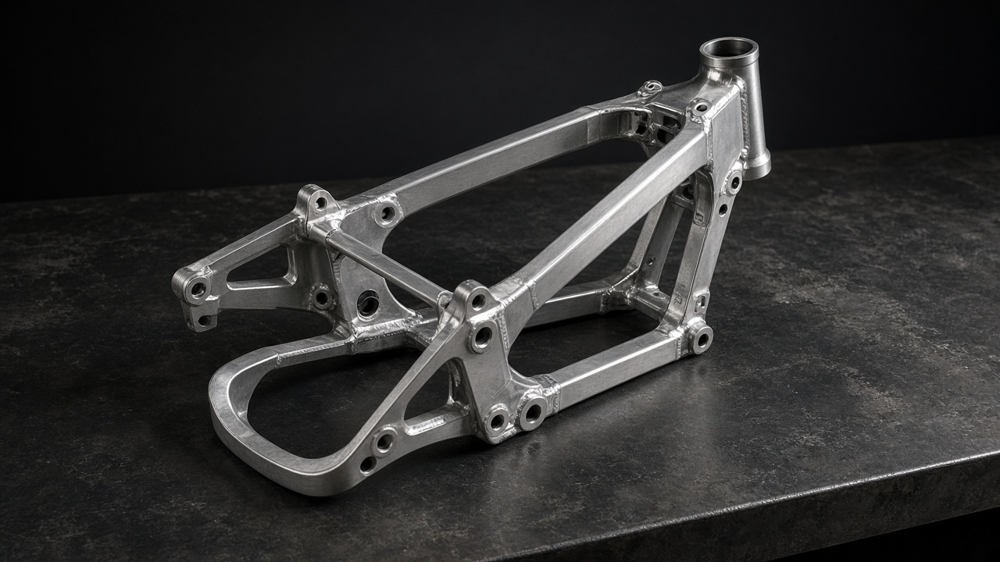

01 · Chassis
Spar geometry that stays honest
Twin aluminium spars, steep steering geometry on ARC and LINE, longer trail on HOLD and SPAN. We publish rake, trail and wheelbase on every model card because posture without numbers is marketing.
Swingarms are single-sided where belt drive needs clearance, double-sided where chain loads demand it. Nothing is mirrored for symmetry alone.